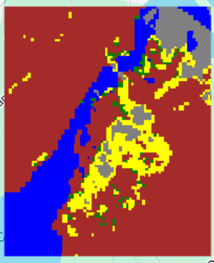
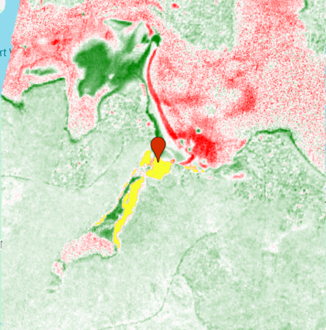
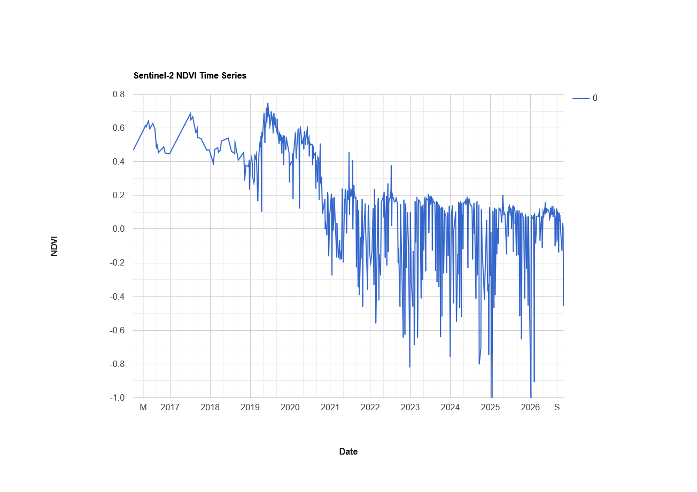
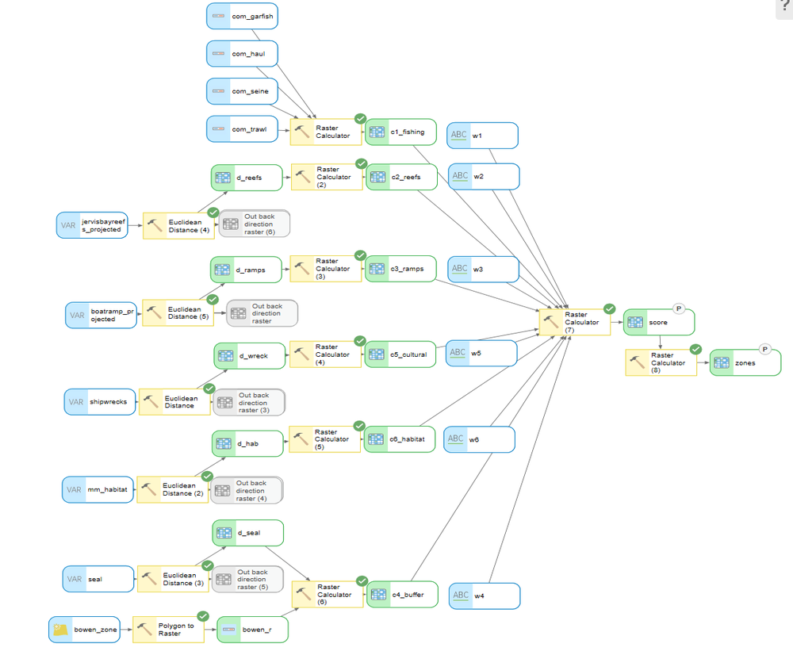
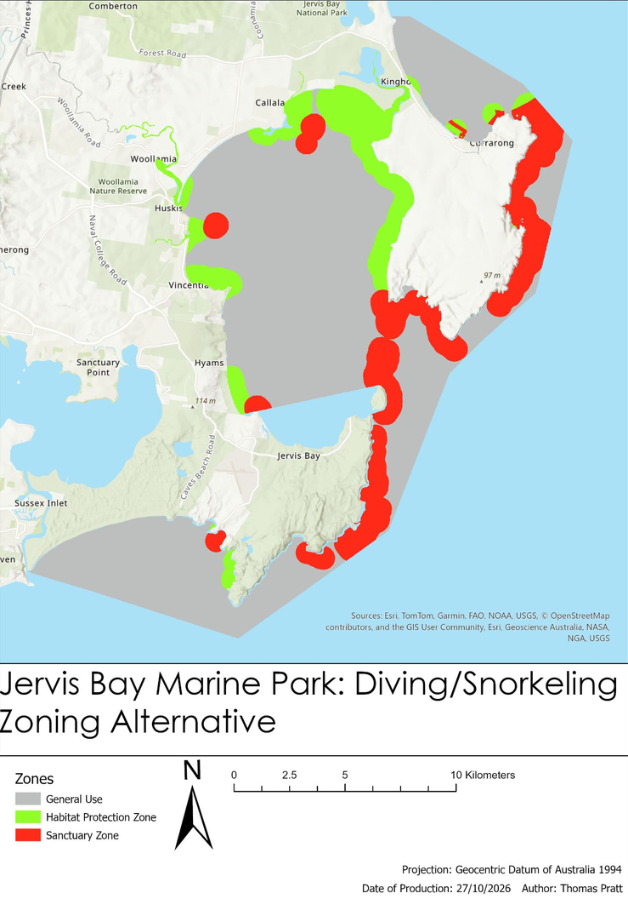
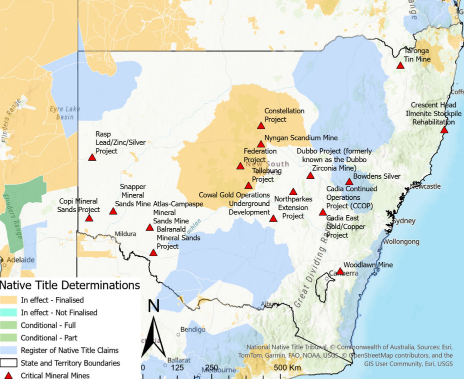
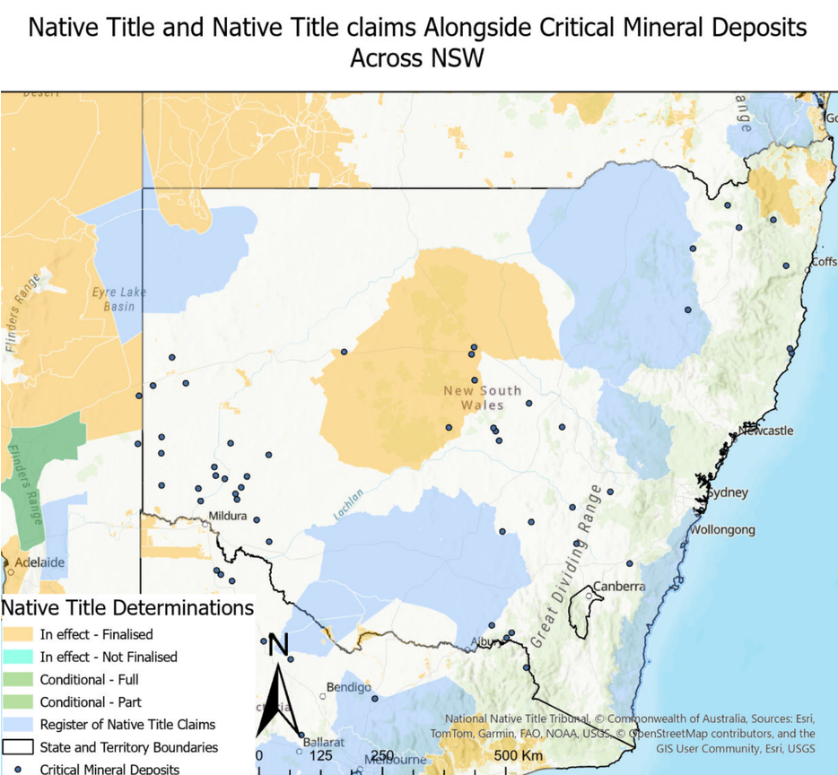

I'm a final-year Bachelor of Science student at the University of Sydney (Environmental Studies, Geology and Geophysics). I have used GIS and satellite imagery to model, classify and monitor landscapes, and I'm interested in how spatial analysis underpins credible nature-based projects.
ArcGIS Pro (ModelBuilder, multi-criteria analysis, raster and overlay analysis, cartography), QGIS
Remote sensing
Google Earth Engine, Sentinel-2 and Planet imagery, random forest classification, NDVI change detection and time series, accuracy assessment
Programming
Python, JavaScript (Earth Engine), C, C++
Carbon & policy
ACCU Scheme and HIR method, MRV principles, EPBC Act, Native Title Act, NSW SSD and Social Impact Assessment
Field
Geological mapping, field sketching and stratigraphic logging
Projects
Mangrove Dieback Analysis, Cabbage Tree Basin
Royal National Park, NSW · 2026 · Individual project, University of Sydney
Google Earth EngineSentinel-2PlanetRandom forestNDVI
Problem
Mangroves at Cabbage Tree Basin showed visible dieback. The aim was to map current land cover, then measure where, how much and when the mangroves declined.
Data
Sentinel-2 imagery (27 Sep 2019) for classification
Planet imagery (Sep 2019 and Sep 2022) for change detection
Sentinel-2 time series for timing of dieback
Method
Classified five land cover classes (water, sand, saltmarsh, mangrove, trees) with a random forest model trained on labelled samples.
Validated the classification with an accuracy assessment (overall accuracy and kappa).
Differenced NDVI between the 2019 and 2022 Planet images and thresholded the change to map dieback.
Extracted an NDVI time series over dieback areas to pin down when decline began.
Result:Found that 0.074502 km^2 of mangrove dieback mapped between 2019 and 2022, with major decline beginning around late 2020.

Random forest land cover classification (Sentinel-2, 2019).

NDVI change 2019 to 2022, dieback highlighted.

Sentinel-2 NDVI time series over the dieback area.
Design three alternative Sanctuary, Habitat and General Use zoning plans for Jervis Bay Marine Park from a tourism stakeholder perspective (fishing charters, diving and snorkelling, and wildlife viewing).
My role
Built the team's spatial model, produced all final maps and wrote the GIS methods section.
Method
Prepared six criteria layers: rocky reefs, seagrass and mangroves, commercial fishing grounds, wildlife buffers (seals and Bowen Island penguins), boat ramp access, and shipwrecks and cultural sites.
Derived criteria weights per stakeholder through pairwise comparison.
Built a reusable ModelBuilder workflow on a 10 m raster to run weighted overlay for each scenario, with adjustable buffer distances.
Result:Three zoning scenarios that [one-line summary of the trade-offs].

ModelBuilder workflow for the weighted overlay.

Final zoning plan.
Critical Minerals, Native Title and Social Impact Assessment
As critical mineral mining expands, how well do NSW Social Impact Assessments capture the impacts on Indigenous communities whose land is affected?
My role
Contributed to the GIS overlap analysis and led the literature review, synthesising 36 peer-reviewed sources under the Millennium Ecosystem Assessment framework.
Method
Mapped the overlap between critical mineral developments and deposits and native title claims and determinations.
Classified documented mining impacts by ecosystem service (provisioning, regulating, cultural) and Indigenous wellbeing dimension.
Reviewed SIAs for State Significant Developments against these impacts.
Result: GIS mapping found that 10 of the 20 critical mineral mines in NSW (as of 2026) are located on land subject to a native title determination or registered native title claim.

Critical mineral developments and native title areas, NSW.

Native title areas overlaid with potential critical mineral deposits, NSW.